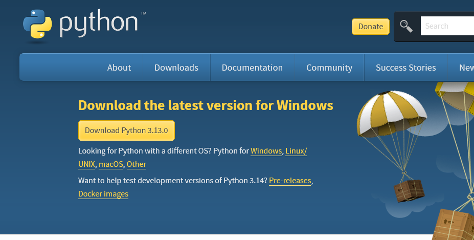
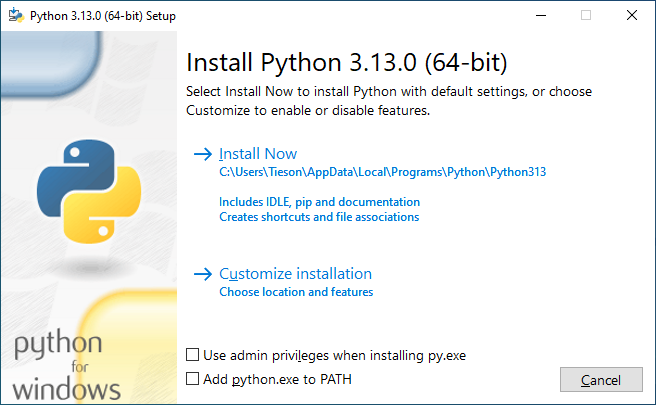
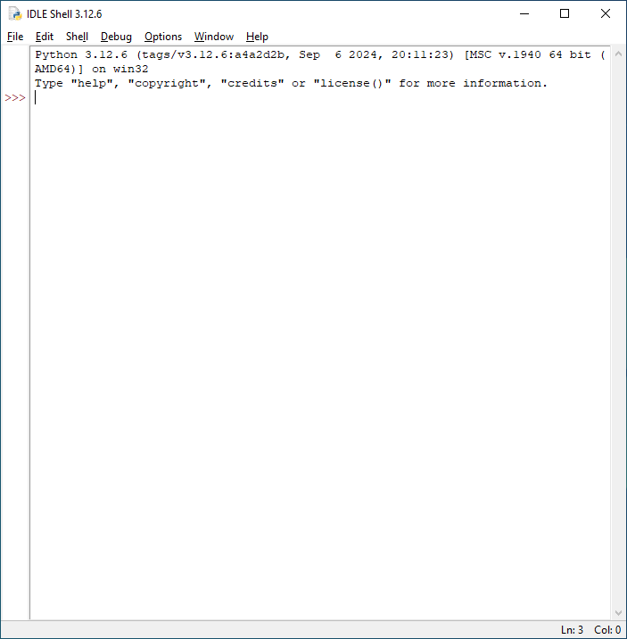
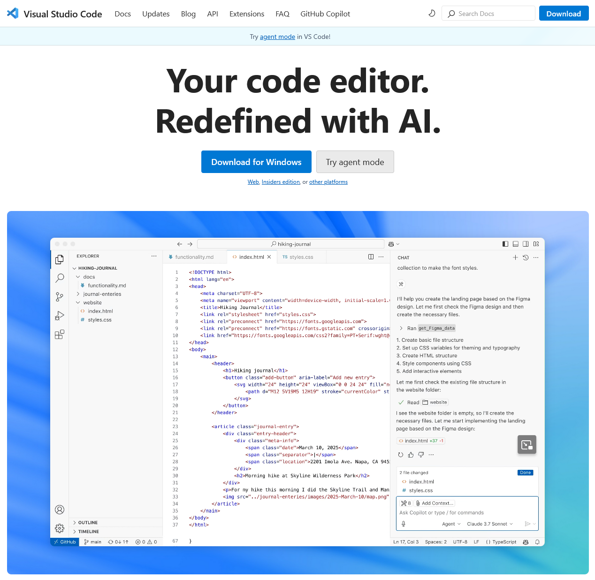
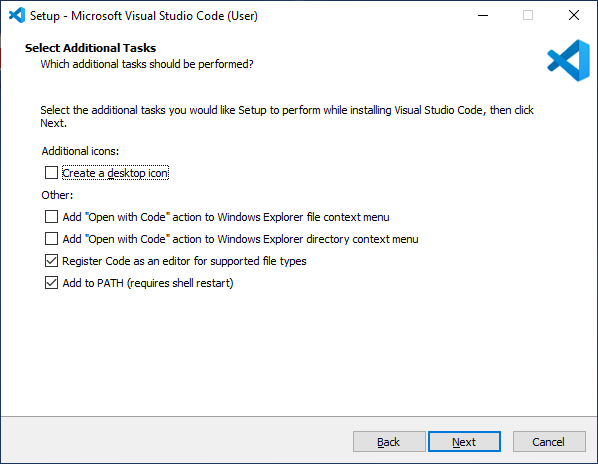
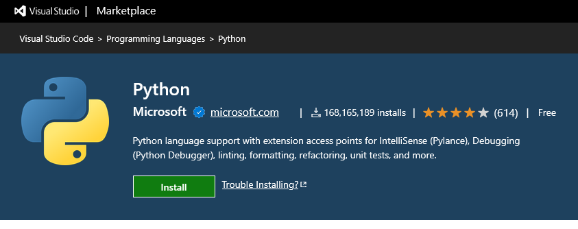
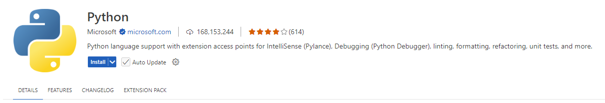
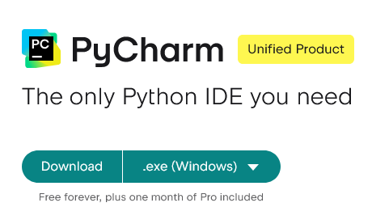
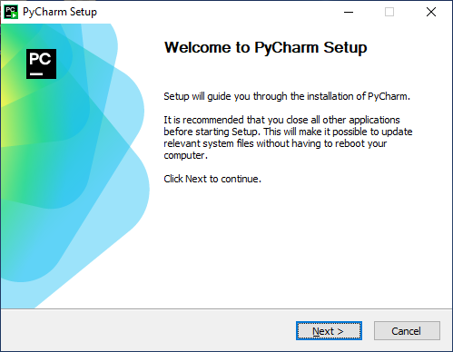

Setting up Python for Local Development
Multiple courses at GRCC require a working knowledge of Python, or (in the case of CIS-116) teach the concepts of programming using the Python programming language. For the most part, you’ll probably be using zyBooks as a learning platform, and zyBooks provides a browser-based IDE within which you will complete your coursework.
It can be useful at times, either for troubleshooting unexpected results from zyBooks or just to experiment outside of the learning platform, to have the ability to write and execute Python code on your local computer. To that end, we’ll walk you through a few options for installing Python and tools for creating Python projects.
Install Python and IDLE
You can install Python by visiting https://www.python.org/downloads/. The website should automatically detect your operating system and offer the correct version to install:

Once the download has completed, launch the installer:

The default options are safe to use, so we’d recommend choosing Install Now. Windows users will likely benefit from also checking the Add python.exe to PATH option at the bottom of the dialog, but it’s not strictly required.
Once the installer completes, you will be able to execute Python files locally. You’ll also have access to the native Python code editor, called IDLE:

For a simple example program you can run, to verify that Python is installed correctly, see Python Examples - ‘Hello World’.
Install (or Extend) Visual Studio Code
Visual Studio Code (also known as VS Code) is a multi-platform code editor and development environment. It comes with native support for multiple programming languages, and has an extensive ecosystem of free or paid extensions to add support for additional languages or frameworks. To that end, it makes a great tool for learning Python.
If you do not have VS Code installed, you can visit https://code.visualstudio.com/ to download the appropriate version for your operating system:

Once the download has completed, launch the installer. Accept the Terms of Service, and then click Next to bring up the installation options:

The default options are safe to use, so click Next until the installer begins to install VS Code. This will take a few minutes, so please be patient. Once the installer has completed, click Finish.
Next, download the Python extension by visiting https://marketplace.visualstudio.com/items?itemName=ms-python.python:

Once the download has completed, launch the installer:

This will open the extension in VS Code - click the Install button to install the extension into VS Code. You may be prompted to restart VS Code, after which the extension will be active.
Install Pycharm
Another great option for developing in Python is PyCharm, an integrated development environment, or IDE, from JetBrains. PyCharm is an IDE focused on Python and Python-based frameworks, and is probably the best choice for complex projects.
PyCharm has both a Pro (paid) version, and a Community (free) edition. Previously, these were separate downloads, but as of 2025, you can simply download one installer by visiting https://www.jetbrains.com/pycharm/download:

Once the download has completed, launch the installer:

The default options are safe to use, so click Next until the installer begins to install PyCharm. This will take a few minutes, so please be patient. Once the installer has completed, click Finish.
The Wrap Up
That’s it! You now have up to three new tools with which to experiment. Have fun!